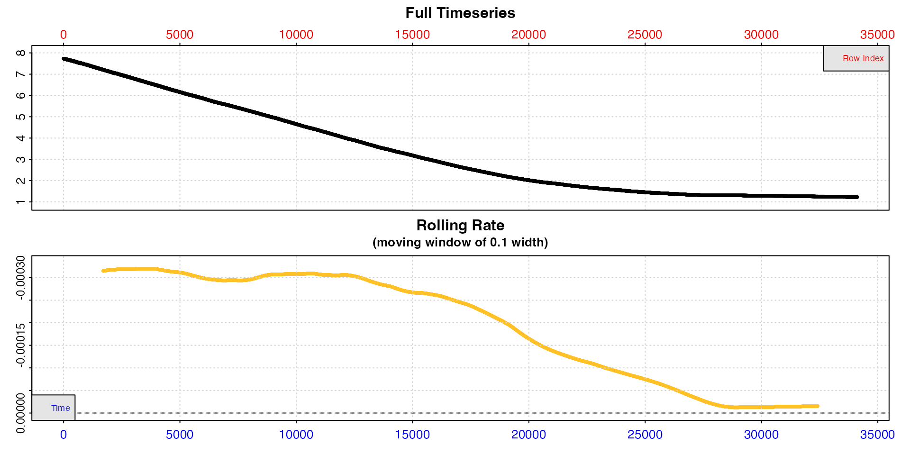
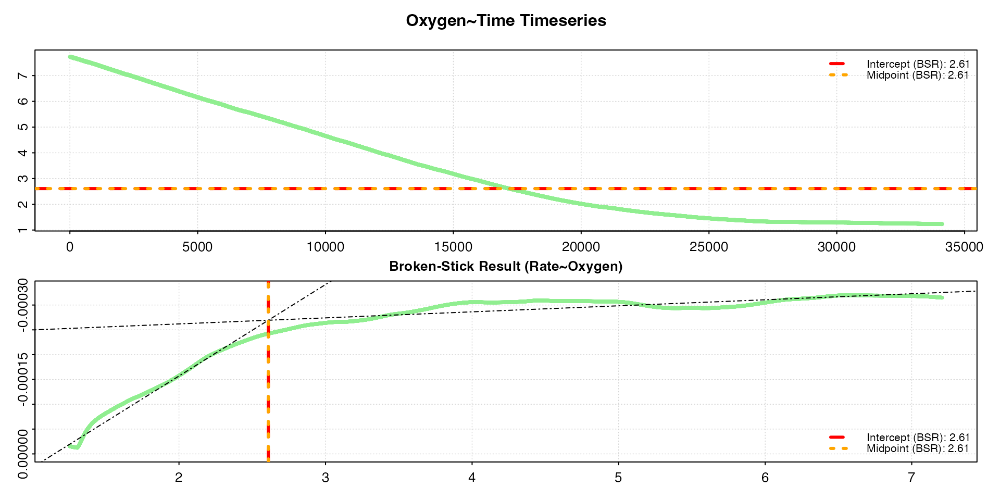
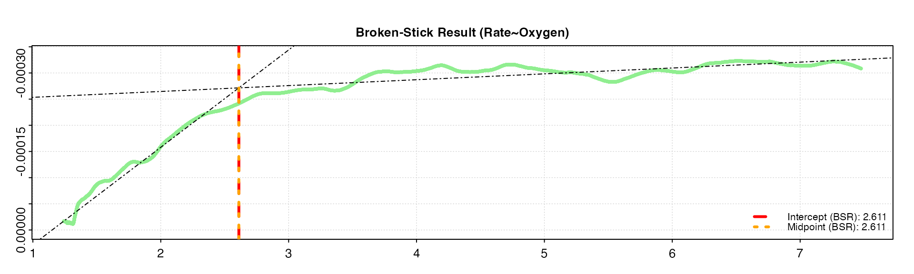
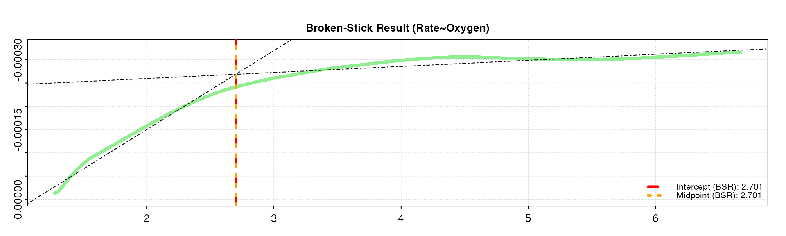
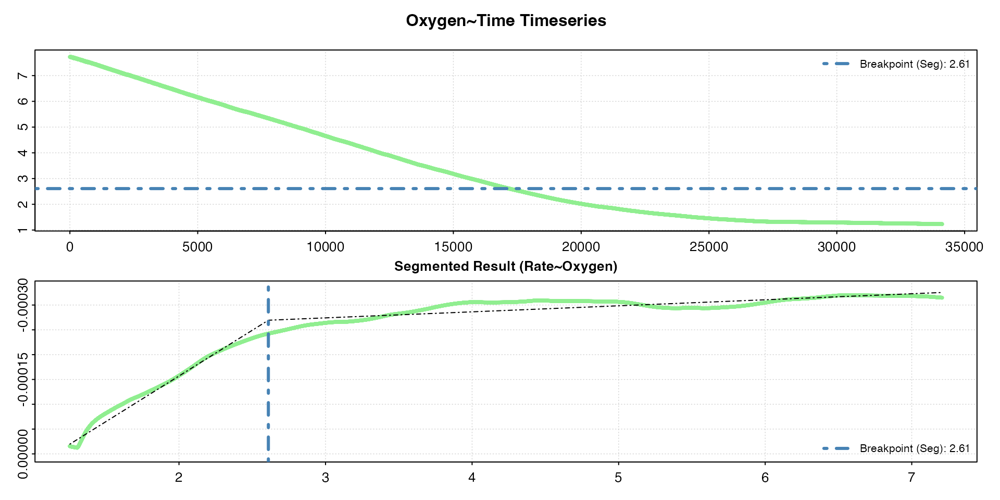
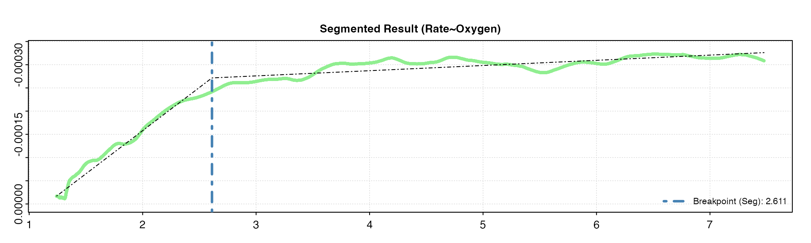
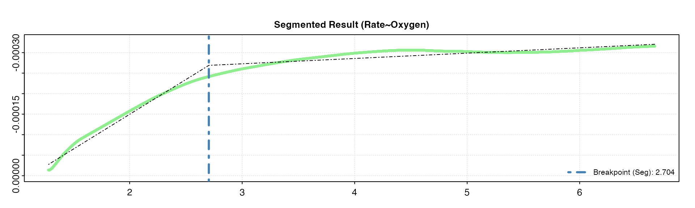
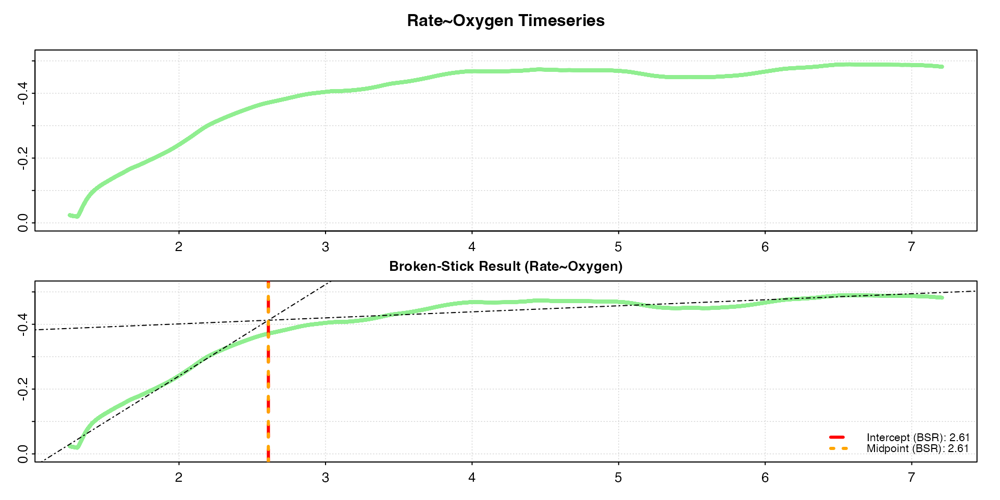

Some species are oxyconformers, with their routine oxygen uptake rate directly proportional to the oxygen supply available from the environment. So, for example, at 50% oxygen their uptake rate will be half that at 100% oxygen. Many species however are oxyregulators, and are able to regulate uptake and maintain routine rates as oxygen supply declines until a value is reached below which uptake precipitously declines. Note however that the classification of species into strict oxyconformers and oxyregulators is somewhat simplistic; there can be a continuum of responses between these extremes, and many intermediate cases (Mueller & Seymour, 2011).
The oxygen value below which routine uptake becomes unsustainable is termed the critical oxygen value (COV) or \(P_{crit}\). Historically, this was expressed in units of partial pressure of oxygen (e.g. kPa), hence \(P_{crit}\) as in the critical pressure of oxygen, but it is also commonly expressed in units of oxygen concentration. Here we will use the term COV to describe the value regardless of units.
COV is typically determined in long duration, closed-chamber respirometry experiments in which the specimen is allowed to deplete the oxygen in the chamber, with the resulting oxygen trace used to identify the breakpoint in the relationship of uptake rate to oxygen concentration.
oxy_crit
oxy_crit() is the respR function for
determining critical oxygen values. It accepts two forms of data
input.
The first is the general structure that all other respR
functions accept, a data.frame or inspect
object containing paired values of time and oxygen pressure or
concentration. For data frame inputs, if time and oxygen are not the
first and second columns respectively, the columns can be specified with
the time and oxygen inputs. For
inspect objects, these will have been specified already.
These oxygen~time data are used to calculate a rolling rate
of the specified width, the default being 0.1 or 10% of the
width of the entire dataset. This rolling rate, similar to the lower
panel in the inspect plot in the example below, is the data upon which the critical value
analysis is conducted.
The second data input option is to input a data.frame
containing already calculated rates, paired with relevant oxygen values.
Typically these would be the mean or central oxygen value of the range
over which the rate was determined. These columns can be specified using
the rate and oxygen inputs. In this case, the
function does not calculate a rolling rate internally, and the critical
point analysis is performed on the input data directly. The rates can be
absolute (i.e. whole chamber or whole specimen) or mass-specific rates;
either will give identical results.
The oxy_crit() function currently provides two methods
to detect the breakpoint in the rate~oxygen relationship.
With high-resolution, relatively non-noisy data these typically return
similar results, but results may vary depending on the characteristics
of the data.
method = "bsr"
The first method is the “broken-stick” regression (BSR) approach
adapted from Yeager & Ultsch (1989),
in which two segments of the data are iteratively fitted and the
intersection with the smallest sum of the residual sum of squares
between the two linear models is the estimated critical point. Two
slightly different ways of reporting this breakpoint are detailed by
Yeager & Ultsch; the intercept and midpoint. These
are usually close in value, and oxy_crit returns both.
method = "segmented"
The second method is a wrapper for the “segmented regression”
approach available as part of the segmented
R package by Muggeo (2008). This
estimates the critical point by iteratively fitting two intersecting
models and selecting the point that minimises the “gap” between the
fitted lines.
The function has the following additional inputs:
width
For data entered as time and oxygen values,
this controls the width of the internally calculated rolling regression
which provides the rates upon which the critical point analysis is
conducted. The default is 0.1, representing 10% of the
length of the dataset and seems to perform well with most data we have
tested it with. However, the width should be chosen
carefully after experimenting with different values and examining the
results. Too low a value and the rolling rate will be noisy making it
more difficult to detect a critical breakpoint, too high and it will be
oversmoothed. See here
for a discussion of appropriate widths and the implications of
overfitting rolling rates, and also Prinzing
et al. 2021 for an excellent discussion of appropriate widths in
rolling regressions. This is an important analysis parameter with major
implications for the output values and should be reported alongside the
results.
thin
This affects the "bsr" method only, which is
computationally intensive, and thins large datasets which take a
prohibitively long time to process to more manageable lengths. This is
entered as an integer value, with the default being
thin = 5000, and the data frame will be uniformly
subsampled to this number of rows before analysis. The default value of
5000 has in testing provided a good balance between speed and results
accuracy and repeatability. However, results may vary with different
datasets, so users should experiment with varying the value. To perform
no subsampling and use the entire dataset enter
thin = NULL. As an example of the time difference,
processing the squid.rd data (around 34000 rows long) with
the default thin = 5000 decreases the processing time from
~60s to ~6s, but outputs an identical result. It has no effect on
datasets shorter than the thin input, or on the
"segmented" method.
parallel
Default is FALSE. This controls the use of parallel
processing in running the analysis. If your dataset is particularly
large or high resolution and analyses are taking a prohibitively long
time to process you can try changing this to TRUE. Note,
this option sometimes causes errors depending on the system or platform,
so should only be used if it is really needed.
Here we will run through an example critical oxygen value analysis of
a dataset included with respR.
The example data, squid.rd, contains data from an
experiment on the market squid, Doryteuthis opalescens. More
information about the data, including its source and methods, can be
obtained with ?squid.rd.
squid.rd
#> Time Oxygen
#> <int> <num>
#> 1: 0 7.7264
#> 2: 1 7.7264
#> 3: 2 7.7264
#> 4: 3 7.7264
#> 5: 4 7.7264
#> ---
#> 34116: 34115 1.2310
#> 34117: 34116 1.2310
#> 34118: 34117 1.2310
#> 34119: 34118 1.2310
#> 34120: 34119 1.2310We can visualise and examine the dataset using the
inspect() function.
squid <- inspect(squid.rd)
#> inspect: Applying column default of 'time = 1'
#> inspect: Applying column default of 'oxygen = 2'
#> inspect: No issues detected while inspecting data frame.
#>
#> # print.inspect # -----------------------
#> Time Oxygen
#> numeric pass pass
#> Inf/-Inf pass pass
#> NA/NaN pass pass
#> sequential pass -
#> duplicated pass -
#> evenly-spaced pass -
#>
#> -----------------------------------------
Note how the date are plotted against both time (bottom blue axis)
and row index (top red axis), which in these data, recordings of oxygen
once per second, happen to be equivalent. We can see from the bottom
plot, a rolling rate across 10% of the total data, that the uptake rate
is relatively consistent to around row 12,000, after which it declines
steadily. We cannot easily tell from these plots what oxygen
concentration this occurs at. For now, we can see the dataset is free of
errors or issues, so we can pass the saved squid object to
the dedicated oxy_crit() function.
We will process the squid data using both methods and compare the results.
This is the default method, so does not need to be explicitly
specified with the method input, and we will let the
default width = 0.1 be applied.
squid.bsr <- oxy_crit(squid)
#> oxy_crit: Applying column defaults of 'time = 1' and 'oxygen = 2'.
#> oxy_crit: Performing Broken-Stick analysis (Yeager and Ultsch 1989)...
#> oxy_crit: Broken-Stick analysis completed in 4.5 seconds.
#> plot.oxy_crit: Plotting Oxygen ~ Time derived critical oxygen results.#>
#> # print.oxy_crit # ----------------------
#>
#> Broken-Stick (Yeager & Ultsch 1989):
#>
#> Sum RSS 6.4041e-07
#> Intercept 2.6101
#> Midpoint 2.6097
#>
#> -----------------------------------------
The output figure shows the two different BSR results, the
intercept and midpoint critical oxygen values,
indicated by horizontal lines against the original timeseries data and
vertical lines on a rate~oxygen plot. In this case, the
lines overlay each other, and the print() output shows
that, in these data, both methods give virtually identical values for
the COV: 2.61 mg L-1. Note that for some data, depending on
various characteristics, such as noise, abruptness of the break, etc.,
the two different BSR methods may provide different results.
Full analysis results can be seen using summary().
summary(squid.bsr)
#>
#> # summary.oxy_crit # --------------------
#>
#> --Broken-Stick Analysis Summary--
#> Top ranked result shown. Others available in '$results' element of output.
#>
#> splitpoint sumRSS l1_coef.b0 l1_coef.b1 l2_coef.b0 l2_coef.b1 crit.intercept crit.midpoint
#> 1: 2.6089 6.4041e-07 0.00021172 -0.00018433 -0.00023767 -1.2152e-05 2.6101 2.6097
#>
#> -----------------------------------------Let’s change the width input to see how it affects the
results. We’ll try smaller and larger width values. We can
also use panel to output only the rolling rate plot.
oxy_crit(squid, width = 0.05, panel = 2)
oxy_crit(squid, width = 0.2, panel = 2)
Note how the rolling rate plot with the higher width is much
smoother, with a less pronounced breakpoint. Increasing the width by too
much can smooth out critical breakpoints, which is the very thing that
the function is trying to detect. We can see the smaller
width gives a similar result as the default value of
0.1, while the larger width estimates the
breakpoints as a slightly higher value. Therefore, in this case the
default value of 0.1 seems to be appropriate and give
reliable results.
When running COV analyses, users should experiment with different widths, choose them appropriately and objectively, and report them in the analysis methods alongside results.
Now we’ll run the analysis using the "segmented" method,
again with the default width = 0.1.
squid.seg <- oxy_crit(squid, method = "segmented")
#> oxy_crit: Applying column defaults of 'time = 1' and 'oxygen = 2'.
#> oxy_crit: Performing Segmented breakpoint analysis (Muggeo 2003)...
#> oxy_crit: Segmented analysis convergence attained in 1 iterations.
#> plot.oxy_crit: Plotting Oxygen ~ Time derived critical oxygen results.#>
#> # print.oxy_crit # ----------------------
#>
#> Segmented (Muggeo 2003):
#>
#> Std. Err. 0.0017852
#> Breakpoint 2.6099
#>
#> -----------------------------------------
For these particular data, we get the exact same result as the BSR method: 2.61 mg L-1. This will not be the case with every dataset.
Full analysis results can be seen using summary().
summary(squid.seg)
#>
#> # summary.oxy_crit # --------------------
#>
#> --Segmented Analysis Summary--
#> Intercept x U1.x psi1.x std.err crit.segmented
#> 1: 0.00021175 -0.00018435 0.00017219 0 0.0017852 2.6099
#>
#> -----------------------------------------Again, let’s try different width inputs.
oxy_crit(squid, width = 0.05, method = "segmented", panel = 2)
oxy_crit(squid, width = 0.2, method = "segmented", panel = 2)
We can see again we get the same values with these different widths as in the BSR method above, though this won’t necessarily be the case with every dataset. The higher width tends to oversmooth the rolling rate, and gives a slightly higher COV.
The example above used raw oxygen~time data, and so the
function calculated a rolling rate internally, then performed the
breakpoint analysis on these data. However, the function can accept
already calculated rate~oxygen data, and the function will
perform the analysis using these data directly. These rates can be
either absolute rates (i.e. whole specimen or whole chamber), or
mass-specific rates; both will give identical critical value results.
The rates can also be unitless rates, that is the rate values output by
respR functions such as calc_rate and
auto_rate before conversion to proper oxygen rate units, as
well as rates already converted to units. As long as all rates are
dimensionally equivalent the critical oxygen analysis will output
identical results.
Here, we’ll use the "rolling" method in
auto_rate() to perform a rolling regression on the squid
data to get a rolling rate, and we’ll convert these to a mass-specific
rate in ml/h/g. We’ll pair these values in a data frame
with a rolling mean of the oxygen value from the same window using the
roll
package.
This new dataset will be shorter by the input width
setting, because the rolling methods start at row width/2
and run to width/2 before the final row (roll
has options to output results of the same length, but it necessarily
involves using partial windows at the start and end of the data, which
can result in questionable outputs and is not really necessary
here).
## Perform rolling rate analysis
squid_ar <- auto_rate(squid.rd, method = "rolling", width = 0.1, plot = FALSE)
## Convert rates
squid_conv <- convert_rate(squid_ar,
time.unit = "sec",
oxy.unit = "mg/L",
output.unit = "ml/h/g",
volume = 12.3,
mass = 0.02141,
t = 15,
S = 30,
P = 1.01)
#> convert_rate: Object of class 'auto_rate' detected. Converting all rates in '$rate'.
## Extract rates
rate <- squid_conv$rate.output
## Rolling mean of oxygen value
oxy <- na.omit(roll::roll_mean(squid.rd[[2]], width = 0.1 * nrow(squid.rd)))
## Combine to data.frame
squid_oxy_rate <- data.frame(oxy,
rate)Now we run the oxy_crit analysis. We use the
oxygen and rate inputs to specify the
columns.
oxy_crit(squid_oxy_rate, oxygen = 1, rate = 2)
#> oxy_crit: Performing analysis using Rate ~ Oxygen data.
#> oxy_crit: Performing Broken-Stick analysis (Yeager and Ultsch 1989)...
#> oxy_crit: Broken-Stick analysis completed in 4.7 seconds.
#> plot.oxy_crit: Plotting Rate ~ Oxygen derived critical oxygen results.
#>
#> # print.oxy_crit # ----------------------
#>
#> Broken-Stick (Yeager & Ultsch 1989):
#>
#> Sum RSS 1.5021
#> Intercept 2.6101
#> Midpoint 2.6097
#>
#> -----------------------------------------Notice that we get the same critical values as we got with the
analysis on oxygen~time data above,
despite the very different rate values (y-axis) and the fact these are
mass-specific rates. Both absolute and mass-specific rates will
give identical results.
Results of oxy_crit analyses can be extracted from the
results object. The critical oxygen value is in the $crit
element. If the "bsr" method has been used it will contain
both results, if the "segmented" method it is a single
value.
## bsr results
squid.bsr$crit
#> $crit.intercept
#> [1] 2.6101
#>
#> $crit.midpoint
#> [1] 2.6097
## segmented result
squid.seg$crit
#> [1] 2.6099Summary results can also be exported to a data.frame by
using the summary() function and
export = TRUE.
## bsr
bsr_res <- summary(squid.bsr, export = TRUE)#> splitpoint sumRSS l1_coef.b0 l1_coef.b1 l2_coef.b0 l2_coef.b1 crit.intercept crit.midpoint
#> <num> <num> <num> <num> <num> <num> <num> <num>
#> 1: 2.6089 6.4041e-07 0.00021172 -0.00018433 -0.00023767 -1.2152e-05 2.6101 2.6097
## seg
seg_res <- summary(squid.seg, export = TRUE)#> Intercept x U1.x psi1.x std.err crit.segmented
#> <num> <num> <num> <num> <num> <num>
#> 1: 0.00021175 -0.00018435 0.00017219 0 0.0017852 2.6099With high resolution, non-noisy data the BSR and Segmented methods identify very similar, if not identical, critical oxygen values (COVs). This will vary with other data, and one of the methods might work better than the other depending on the characteristics of the data. Which to use and report should be informed after familiarisation with how they work and testing with the data. Most importantly, results should be reported alongside analysis parameters which affect the outputs, such as the width of the rolling regression.
There are additional methods to identify critical breakpoints in
oxygen~time data, such as the non-linear regression method of Marshall et al. (2013),
and the α-method of Seibel et al. (2021). It is our
plans to support these and others in updates to oxy_crit,
as well as metrics which describe the degree of oxyregulation of a
specimen in intermediate cases e.g. (Mueller & Seymour,
2011; Tang,
1933).
There is a huge literature (see below) and healthy debate about the use and application of \(P_{crit}\), much of it recent. Before running any COV analysis you should familiarise yourself with the literature, particularly critiques of the different methods, and their utility.
We particularly recommend the debate by Wood (2018) and Regan et al. (2019), and also Ultsch & Regan (2019). Also be sure to check out the latest developments by Seibel et al. (2021).
An important point to note is that \(P_{crit}\) and COVs are most frequently
used as a comparative metric. Since analytical options chosen
by the investigator such as regression width inherently affect the
result, it is arguably more important that these are kept the same
amongst analyses that will be the basis of comparisons, rather than
consideration of the ultimate values per se. Therefore, it is
important that investigators fully report the parameters under which
these analyses have been conducted. This allows editors and reviewers to
reproduce and assess analyses, and subsequent investigators to judge if
comparisons to their own results are appropriate. respR has
been designed to make the process of reporting these analyses
straightforward - see vignette("reproducibility").